01_front_photo_angle
Left: original reference. Right: initial reconstruction.

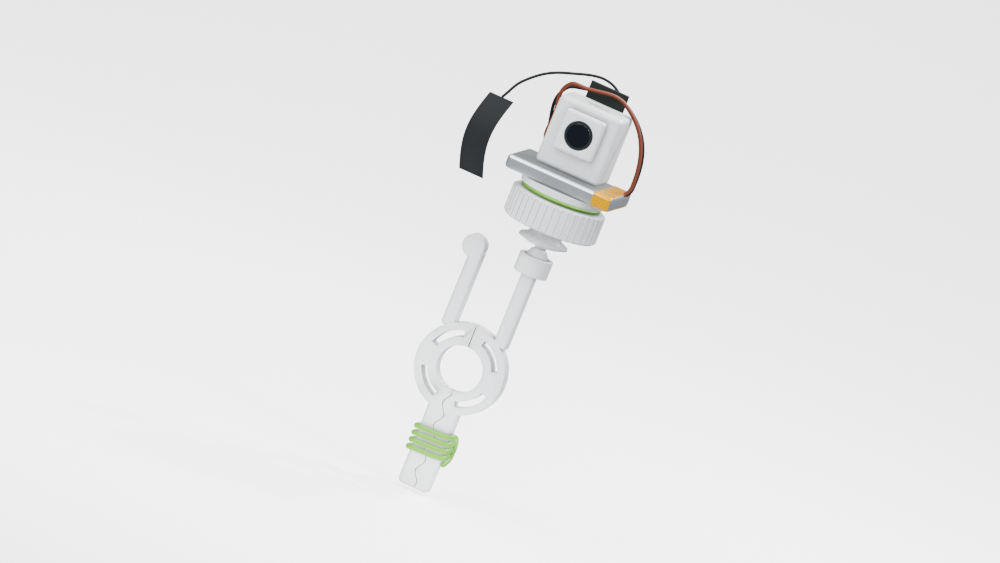
Reference photos are ground truth. These renders have NOT been validated automatically. Supplied dimensions and hidden geometry remain assumptions. No Phase 2 approval is implied.
Left: original reference. Right: initial reconstruction.

Left: original reference. Right: initial reconstruction.

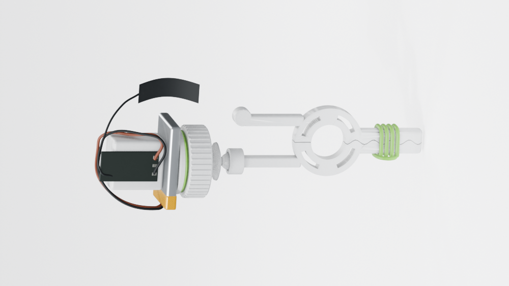
Left: original reference. Right: initial reconstruction.

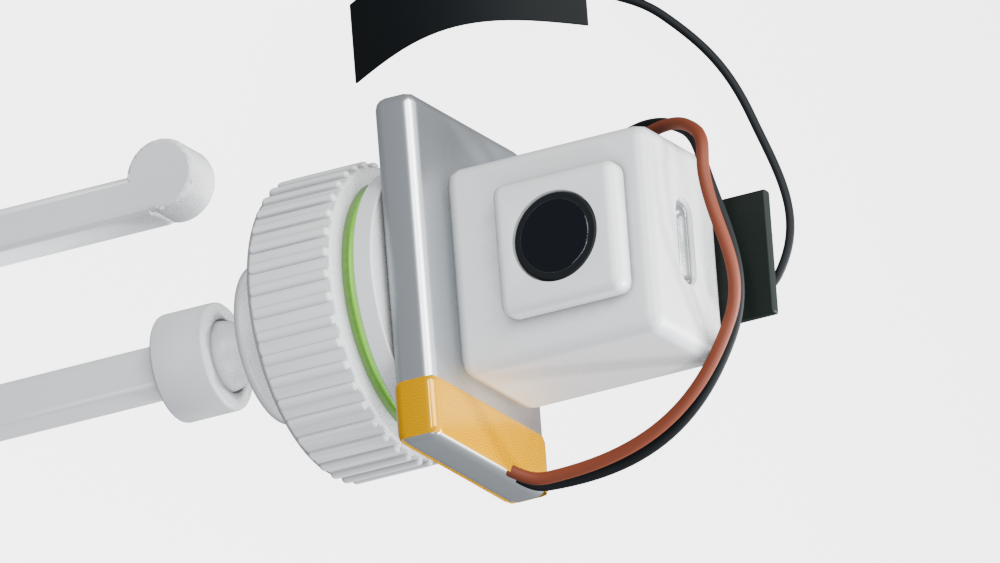
Left: original reference. Right: initial reconstruction.

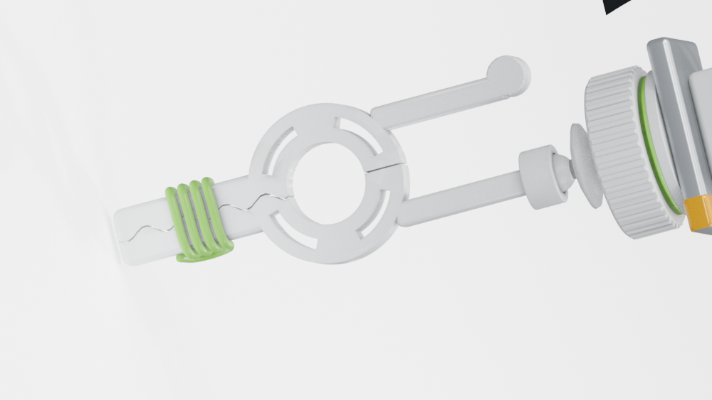
turnaround_front
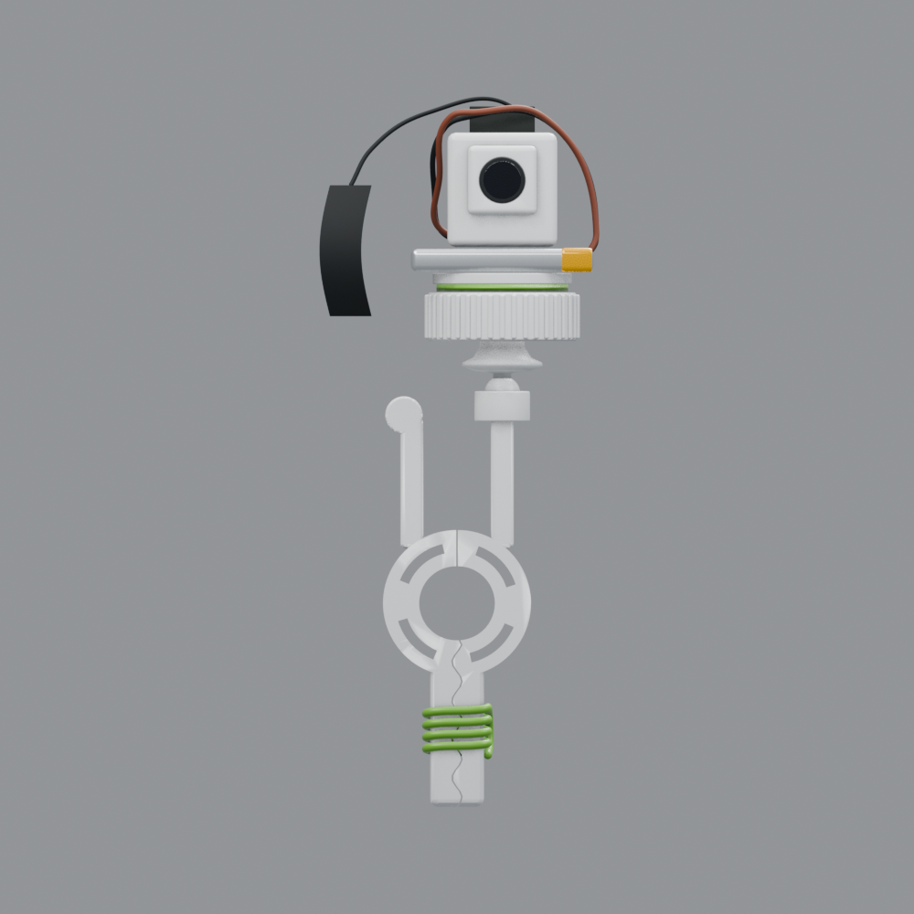
turnaround_back
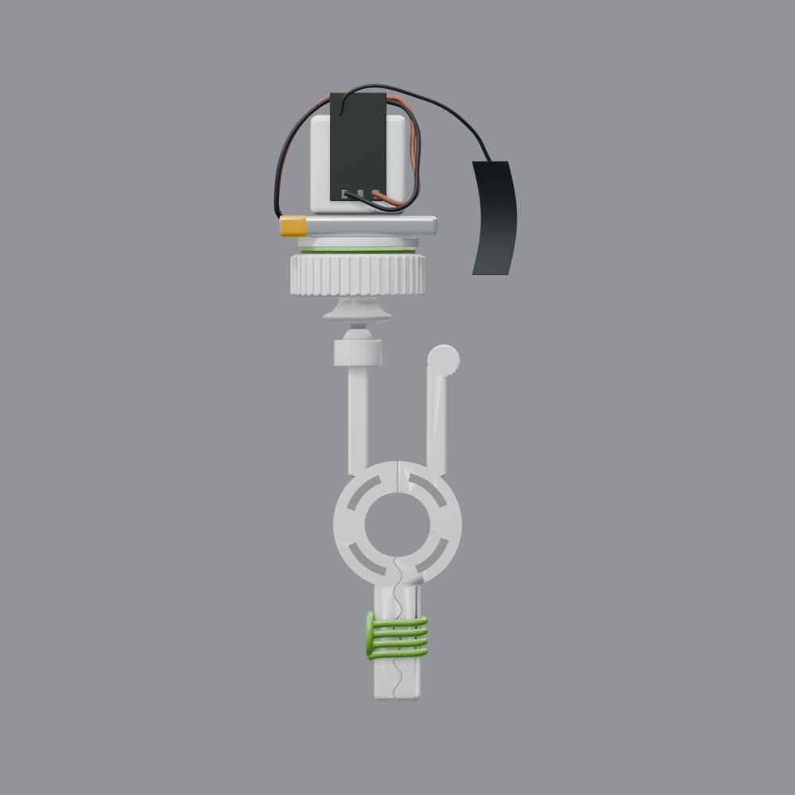
turnaround_left
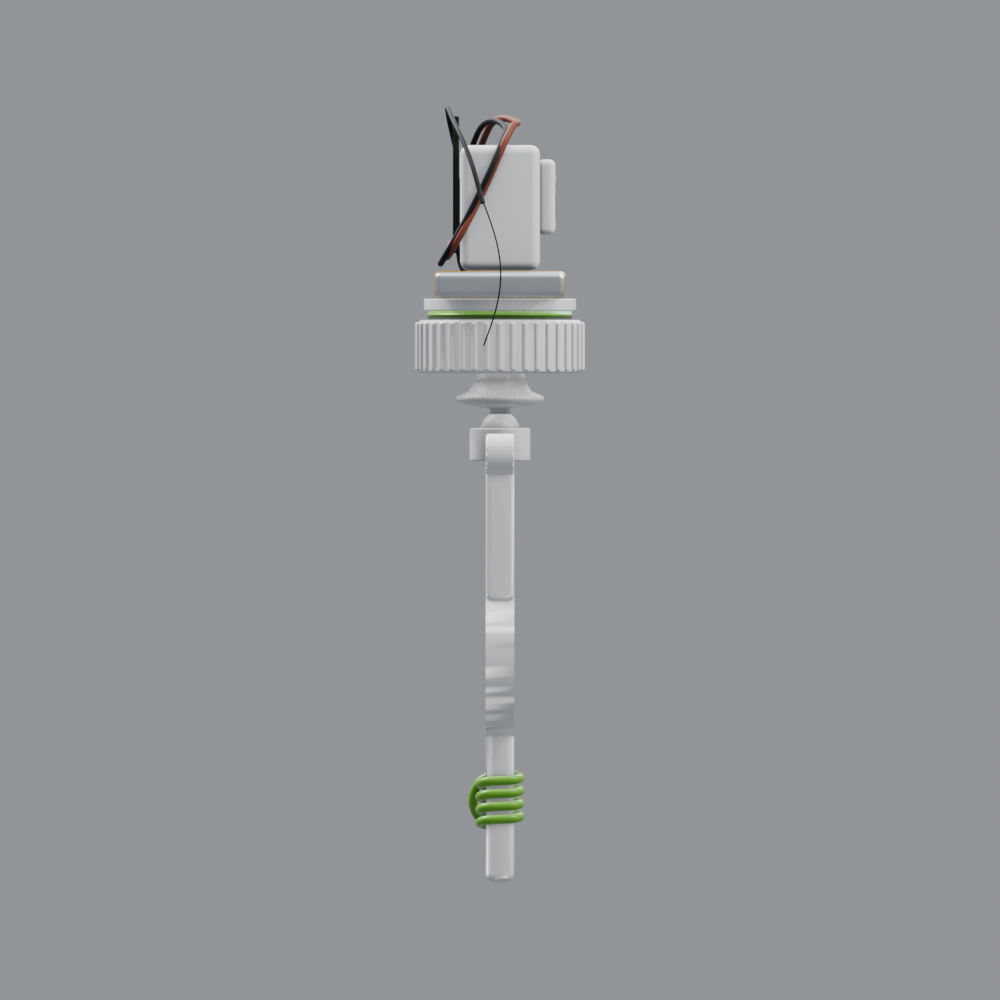
turnaround_right
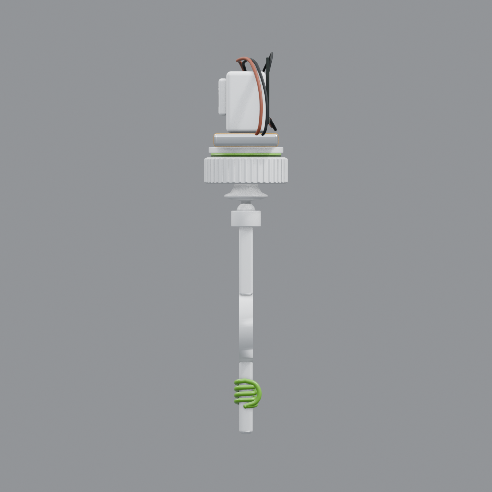
turnaround_top
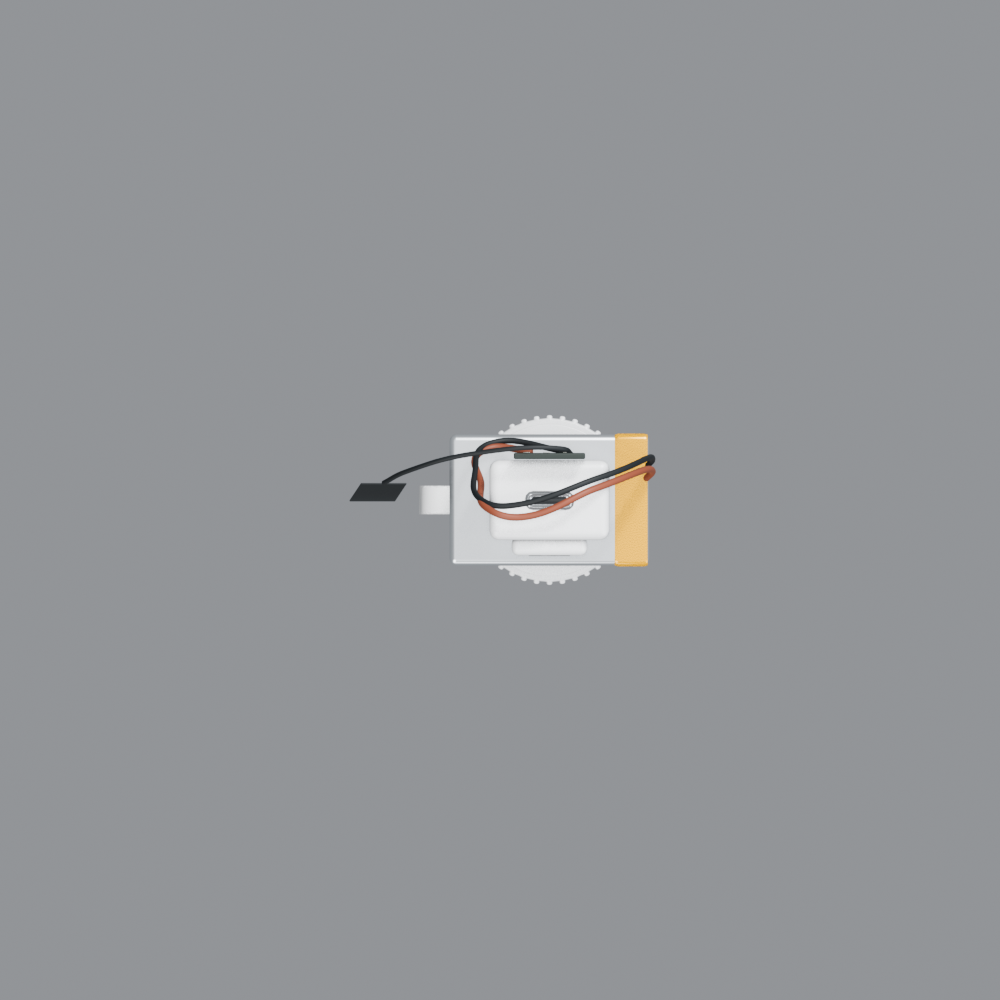
turnaround_bottom
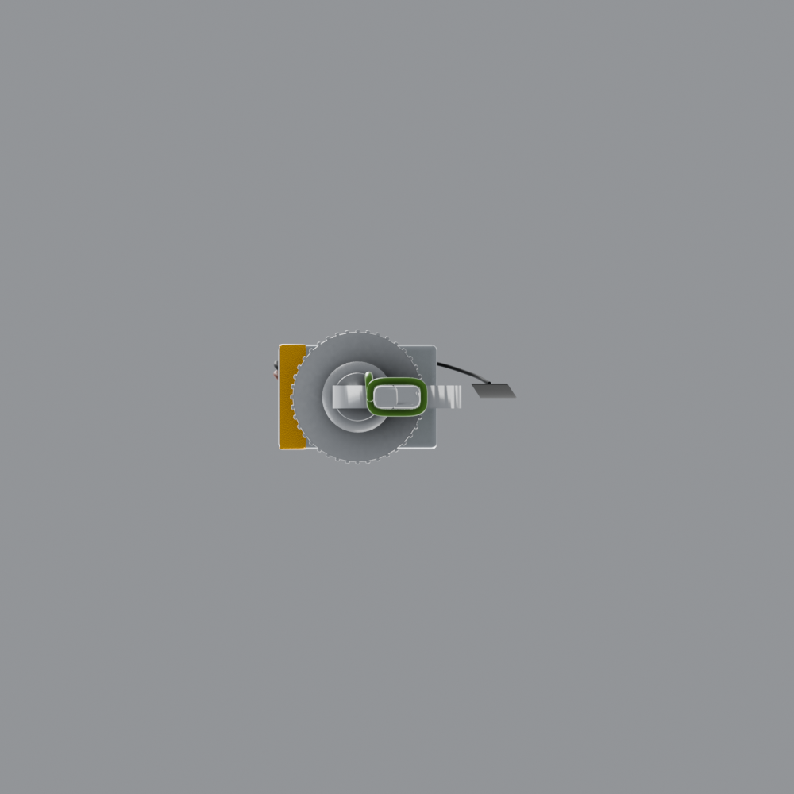
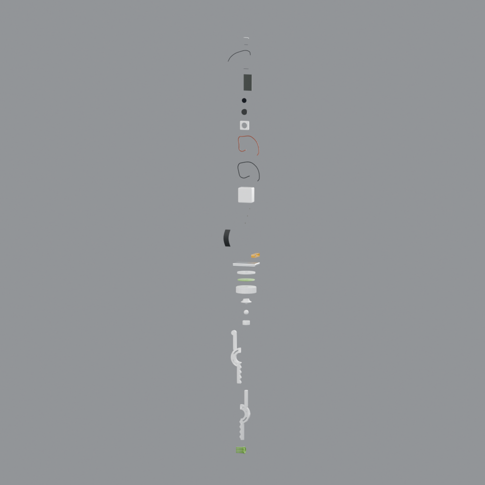
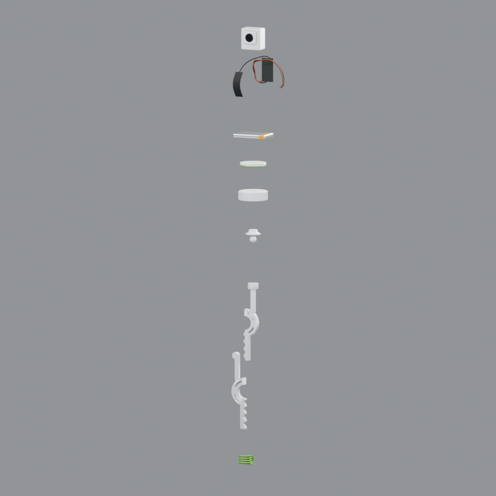